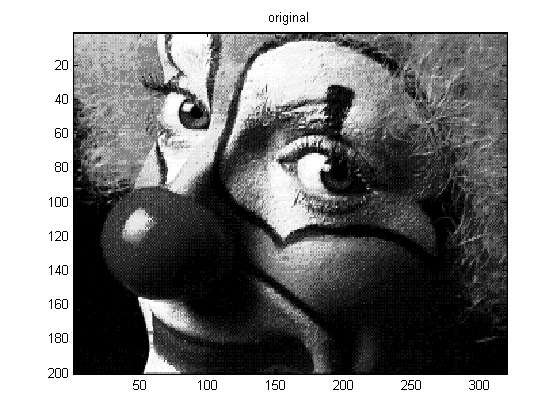
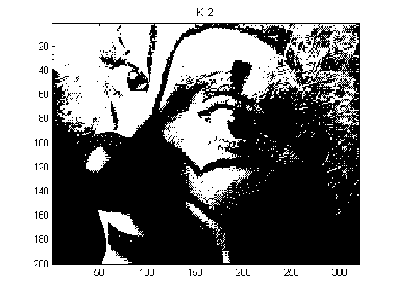
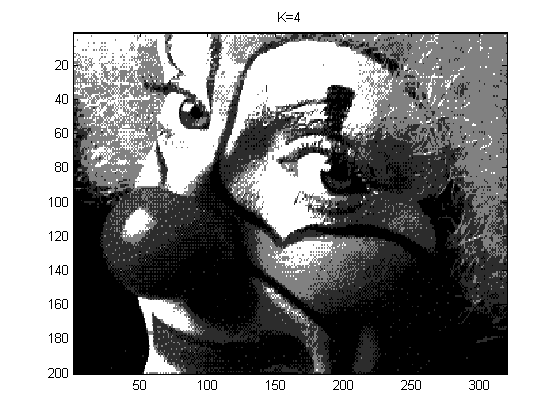

seed = 0; randn('state', seed); rand('state', seed);
load clown;
A = X;
figure;
imagesc(A); colormap(gray); title('original')
printPmtkFigure('vqDemoClownOrig');
[nrows ncols ncolors] = size(A);
data = reshape(A, [nrows*ncols ncolors]);
for K=[2,4]
mu = kmeansFit(data, K);
B = X;
[nrows ncols ncolors] = size(B);
data = reshape(B, [nrows*ncols ncolors]);
compressed = kmeansEncode(data, mu);
decompressed = kmeansDecode(compressed, mu);
Qimg = reshape(decompressed, [nrows ncols ncolors]);
figure;
imagesc(Qimg); colormap(gray)
title(sprintf('K=%d',K))
printPmtkFigure(sprintf('vqDemoClown%d', K));
end
  